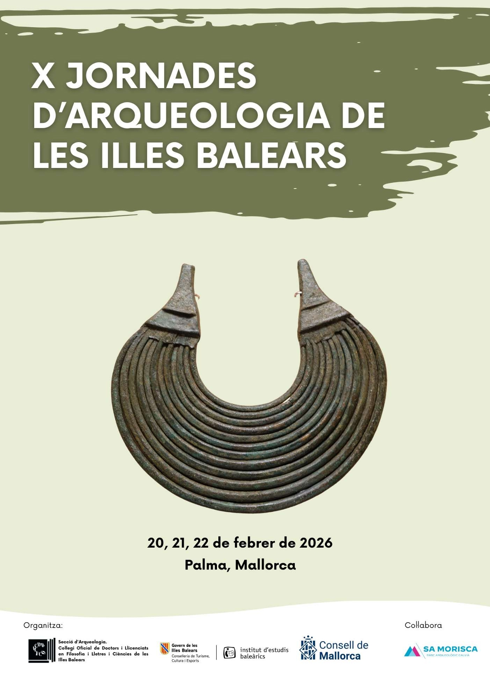
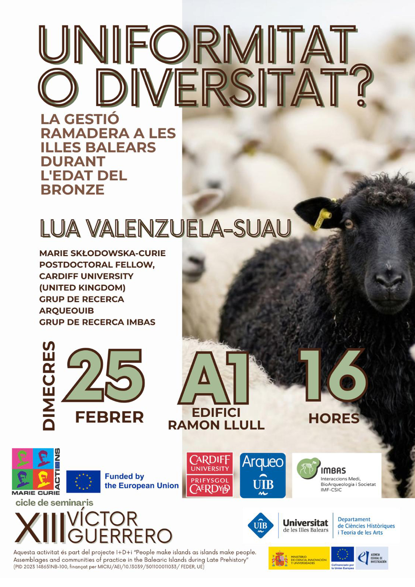
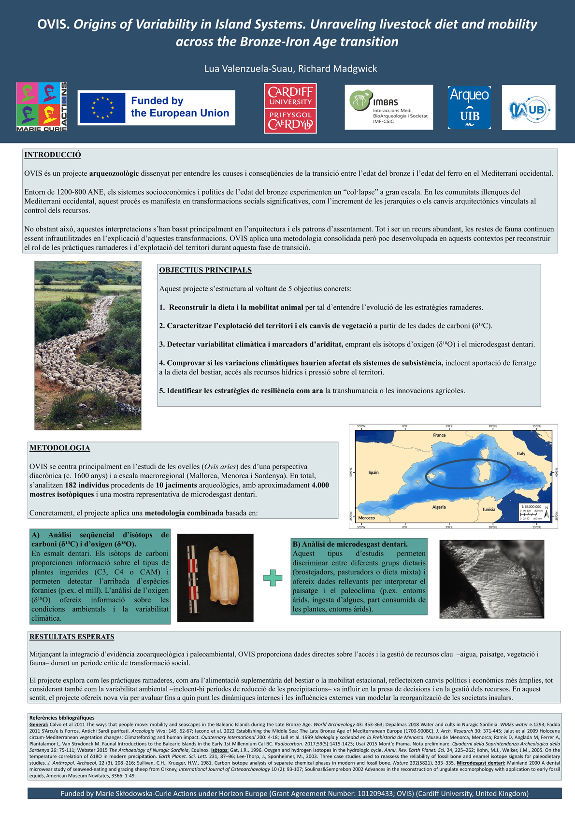

Field & Science
Current developments in archaeozoology, zooarchaeology, and Western Mediterranean prehistory — the scientific landscape underpinning the OVIS project.
PROJECT NEWS



El passat mes de febrer varen tenir lloc a Palma (Mallorca, Illes Balears, Espanya) les X Jornades d'Arqueologia de les Illes Balears, organitzades per la Secció d'Arqueologia del Col·legi d'Historiadors de Balears.
En el marc de les jornades, es va presentar el projecte OVIS davant la comunitat arqueològica que treballa a les Illes Balears mitjançant el pòster titulat "OVIS: Origins of Variability in Island Systems. Unraveling livestock diet and mobility across the Bronze-Iron Age transition". La presentació va anar a càrrec de la research fellow Dra. Lua Valenzuela-Suau i del supervisor del projecte, Prof. Richard Madgwick. Durant la sessió, es varen poder exposar els principals objectius del projecte, la metodologia seleccionada i els resultats esperats.
Igualment, es varen presentar diversos estudis arqueozoològics previs que constitueixen el punt de partida de la recerca desenvolupada dins el projecte OVIS. Concretament, es varen donar a conèixer els treballs "Explotació ramadera i gestió de l'entorn al poblat de navetes de Clariana (Ciutadella, Menorca): integració de dades faunístiques, isotòpiques i de microdesgast dentari" (Dra. Lua Valenzuela-Suau i Dr. Damià Ramis) i "Animals i ritualitat a la cova núm. 45 de Calescoves (Alaior, Menorca)" (Dra. Lua Valenzuela-Suau, Dra. Sonia Carbonell i Dra. Margalida Antònia Coll).
La participació en aquestes jornades ha representat una excel·lent oportunitat per compartir els primers plantejaments del projecte OVIS i establir espais de debat amb investigadors i investigadores especialitzats en la prehistòria balear.
El passat mes de febrer vam tenir l'oportunitat de participar en el "XIII Cicle de Seminaris Víctor Guerrero", organitzat pel Departament de Ciències Històriques i Teoria de les Arts de la Universitat de les Illes Balears.
La conferència, titulada "Uniformitat o diversitat? La gestió ramadera a les Illes Balears durant l'Edat del Bronze", va servir per presentar un estat de la qüestió sobre els coneixements actuals relacionats amb la gestió ramadera durant aquest període prehistòric. La ponència va posar especial atenció a les dades obtingudes mitjançant la zooarqueologia, els isòtops estables i els estudis de microdesgast dentari, eines clau per entendre l'alimentació, la mobilitat i les estratègies de maneig dels ramats.
Aquesta recerca constitueix el punt de partida del projecte OVIS, centrat en l'estudi de les pràctiques ramaderes i les dinàmiques socioeconòmiques de les comunitats de les Illes Balears durant la prehistòria recent.
Volem agrair a l'organització la invitació i l'oportunitat de compartir i debatre aquestes línies de recerca en el marc del seminari.
Pòster científic del projecte OVIS — "Origins of Variability in Island Systems. Unraveling livestock diet and mobility across the Bronze-Iron Age transition" — presentat a les X Jornades d'Arqueologia de les Illes Balears.